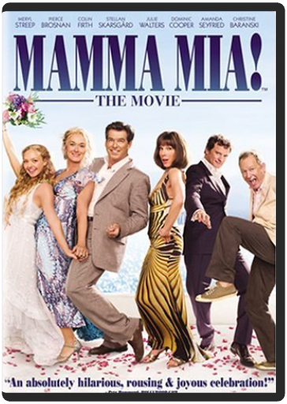

Escape into the enchanted world of chivalry and romance in Stardust, an epic tale starring Claire Danes with Michelle Pfeiffer and Robert De Niro. In hopes of wooing a beautiful girl (Sienna Miller), Tristan (Charlie Cox) promises to bring her a falling star. But he’s in for the adventure of his life when he discovers the star is actually a celestial beauty named Yvaine (Danes) When an old witch Lamia (Pfeiffer) attempts to steal Yvaine’s youth, Tristan must protect her at all costs, in this magical family adventure that will make you fall in love over and over again. | SerendipityPeter Chelsom Irresistible stars John Cusack and Kate Bekinsale are drawn together and take a chance on love in the critically acclaimed romantic comedy! In the course of one magical evening, Jonathan and Sara meet unexpectedly…then part without expectation when she decides they must let fate determine if they are meant to be together. Years later, they are both engaged to others but cannot give up the dream that- despite time, distance and the obstacles that conspire to keep them apart, they will one day meet again! Also starring Jeremy Piven and Molly Shannon, in a stellar supporting cast- you're destined to agree with audiences everywhere who fell for the surprising charms of this delightful big screen romance!  Based on the best-selling books by Laura Ingalls Wilder, this classic, produced and directed by Michael Landon, takes us from the woods of Wisconsin to the plains of Kansas where the Ingalls struggle to build a new life. With indomitable courage that celebrates the resilience of the human spirit, the Ingalls face endless challenges and experience countless adventures as they pursue their dream of a new home. This premiere movie is a "must-have" for all Little House fans! This DVD has been restored using state-of-the-art color correction, picture enhancement and noise reduction technologies.  B001EL6ECM  The definitive ten-disc DVD set, The Ultimate Matrix Collection features all three films in the trilogy together for the first time ever with a newly remastered picture and sound for The Matrix. Also included is the companion piece The Matrix Revisited and the best-selling The Animatrix, plus five entirely new DVDs packed solid with brand-new supplemental materials that encompass every aspect of the Matrix universe, including two new audio commentaries on each film, Enter the Matrix video game footage, 106 deep-delving featurettes/ documentaries and much more!  Brad Pitt and Angelina Jolie smolder in one of the most anticipated, sizzling action films ever made. After five (or six) years of vanilla-wedded bliss, ordinary suburbanites John and Jane Smith (Pitt and Jolie) are stuck in a rut the size of the Grand Canyon?until the truth comes out! Unbeknownst to each other, they are both coolly lethal, highly paid assassins working for rival organizations. And when they discover they're each other's next target, their secret lives collide in a spicy, explosive mix of wicked comedy, pent-up passion, nonstop action and high-tech weaponry that gives an all-new meaning to "Till death do us part!"  Mamma Mia! The MoviePhyllida Lloyd Widescreen. Meryl Streep, Pierce Brosnan and Colin Firth star in this big screen adaption of the hit musical based around the timeless hits of Swedish pop sensations Abba. The plot sets in motion when Sophie (Amanda Seyfried, Mean Girls), daughter of Donna (Streep), sends a letter to three men, inviting them to her wedding—because after reading her mother's diary, she suspects that one of them is her father. When all three arrive at the Greek island where Donna runs a hotel, Donna flips out and finds that passions she thought she'd laid aside are coming back to life. Music and fun ensue.  Based on the incredible true story of amateur cyclist Graeme Obree, who breaks the world one-hour record on a bike he made out of washing machine parts. |

Doddridge Library
Collection Total:
417 Items
417 Items
Last Updated:
Apr 21, 2020
Apr 21, 2020


 Made with Delicious Library
Made with Delicious Library